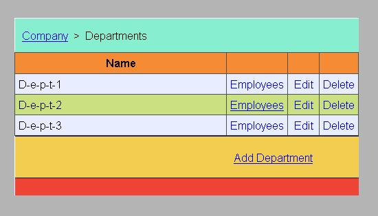
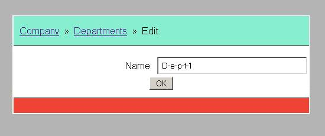
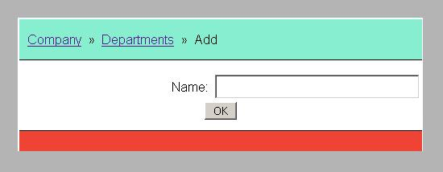
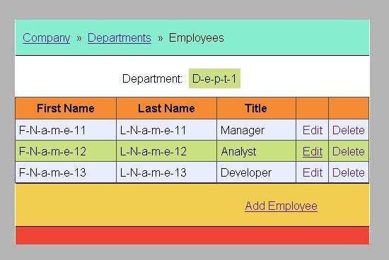
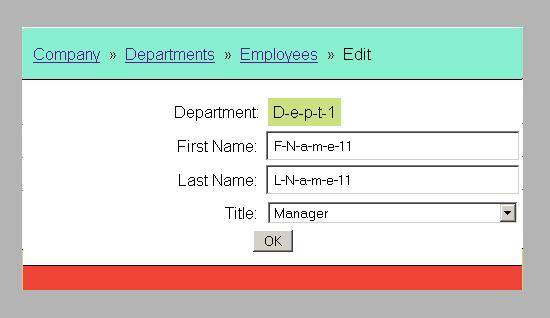
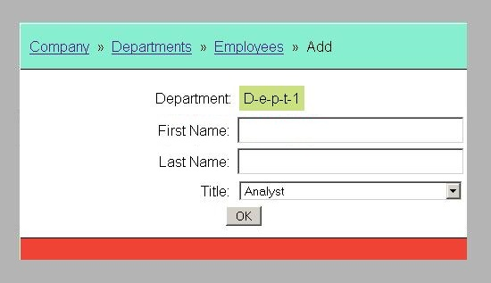

KP_EJB01 README
This is a EJB 3 web application example.
Use Cases
- Company: welcome page
- Show departments: table view of company's departments and links to its employees
- Edit the existing department: edit and update the information pertaining to a department
- Add a new department: add a new department to the company
- Delete the department: delete existing department (with its employees) from the company
- Show employees: table view of selected department's employees
- Edit the existing employee: update and edit the information pertaining to an employee
- Add a new employee: add a new employee to the department
- Delete the employee: delete employee from the department
Application Design & Implementation
Build Process
Application uses build automation tool Apache Maven 3.
Application was tested with JBoss EAP 7.1 and WildFly 11.0.
Application URL: http://localhost:8080/kp_ejb01/.
Database Technology
Application uses MySQL 5.7 relational database for data storage.
Logging
Application uses standard java loggers.
Business / Persistence Layer
The Persistence Layer is based on EJB 3 and MySQL database.
Presentation Layer
Application uses Struts 2 web application framework.
- Location-based breadcrumb website navigation
- Struts tag library
Database Model Diagram

Application Screens

Welcome page of the application. Overview of the company.

Listing all departments.

Editing the existing department.

Adding a new department.

Listing all employees of the selected department.

Editing the existing employee.

Adding a new employee.
API Specifications
(API was not commited to GitHub; this link should be active after local build with 'mvn javadoc')